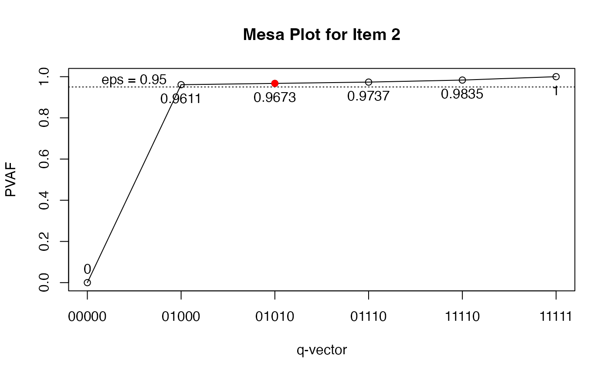

vignettes/OnlineExercises/sGDINA_analysis_example.Rmd
sGDINA_analysis_example.RmdThis tutorial is created using R markdown and knitr. It illustrates how to use the GDINA R pacakge (version 2.9.3) to analyze polytomous response data using the sequential models.
The following code fits the sequential G-DINA model to a set of simulated data, which consist of 20 items (15 polytomous and 5 dichotomous) measuring 5 attributes:
## GDINA R Package (version 2.9.3; 2022-08-13)
## For tutorials, see https://wenchao-ma.github.io/GDINA
dat <- sim20seqGDINA$simdat
head(dat)## [,1] [,2] [,3] [,4] [,5] [,6] [,7] [,8] [,9] [,10] [,11] [,12] [,13] [,14]
## [1,] 0 2 0 2 2 0 0 1 0 0 0 0 3 0
## [2,] 2 0 0 0 0 1 1 1 0 0 1 1 0 2
## [3,] 0 0 2 2 0 0 2 1 0 0 0 0 2 0
## [4,] 0 0 0 0 0 0 0 0 0 0 1 0 0 0
## [5,] 0 2 1 1 1 0 0 1 2 0 2 0 3 0
## [6,] 0 0 2 2 0 0 1 1 1 0 0 3 0 0
## [,15] [,16] [,17] [,18] [,19] [,20]
## [1,] 2 0 0 1 1 1
## [2,] 0 1 0 0 1 0
## [3,] 2 0 0 0 1 1
## [4,] 0 0 1 0 0 0
## [5,] 1 0 0 1 0 1
## [6,] 2 0 1 0 1 0
Q <- matrix(c(1, 1, 1, 0, 0, 0, 0,
1, 2, 0, 1, 0, 1, 0,
2, 1, 1, 0, 1, 0, 0,
2, 2, 0, 0, 0, 1, 0,
3, 1, 0, 1, 0, 1, 1,
3, 2, 1, 0, 0, 0, 0,
4, 1, 0, 0, 0, 0, 1,
4, 2, 0, 0, 0, 1, 0,
5, 1, 0, 0, 1, 0, 0,
5, 2, 0, 1, 0, 0, 0,
6, 1, 1, 0, 0, 0, 0,
6, 2, 0, 1, 1, 0, 0,
7, 1, 0, 1, 0, 0, 0,
7, 2, 0, 0, 1, 1, 0,
8, 1, 0, 0, 0, 1, 0,
8, 2, 1, 0, 0, 0, 1,
9, 1, 0, 0, 0, 1, 1,
9, 2, 0, 0, 1, 0, 0,
10, 1, 0, 1, 1, 0, 0,
10, 2, 1, 0, 0, 0, 0,
11, 1, 1, 1, 0, 0, 0,
11, 2, 0, 0, 0, 0, 1,
12, 1, 0, 1, 0, 0, 0,
12, 2, 0, 0, 0, 1, 0,
12, 3, 0, 0, 0, 0, 1,
13, 1, 0, 0, 0, 0, 1,
13, 2, 0, 0, 0, 1, 0,
13, 3, 0, 0, 1, 0, 0,
14, 1, 1, 0, 0, 0, 0,
14, 2, 0, 1, 0, 0, 0,
14, 3, 0, 0, 1, 0, 0,
15, 1, 0, 0, 0, 1, 0,
15, 2, 0, 0, 0, 0, 1,
15, 3, 1, 0, 0, 0, 0,
16, 1, 1, 0, 0, 0, 0,
17, 1, 0, 1, 0, 0, 0,
18, 1, 0, 0, 1, 0, 0,
19, 1, 0, 0, 0, 1, 0,
20, 1, 0, 0, 0, 0, 1),byrow = TRUE,ncol = 7)
est <- GDINA(dat = dat, Q = Q, sequential = TRUE, model = "GDINA")##
Iter = 1 Max. abs. change = 0.53669 Deviance = 56678.90
Iter = 2 Max. abs. change = 0.04260 Deviance = 49887.11
Iter = 3 Max. abs. change = 0.00852 Deviance = 49770.17
Iter = 4 Max. abs. change = 0.00264 Deviance = 49765.23
Iter = 5 Max. abs. change = 0.00089 Deviance = 49764.87
Iter = 6 Max. abs. change = 0.00031 Deviance = 49764.83
Iter = 7 Max. abs. change = 0.00011 Deviance = 49764.83
Iter = 8 Max. abs. change = 0.00004 Deviance = 49764.83coef() can be used to extract various item parameters:
coef(est) # processing function## $`Item 1 Cat 1`
## P(0) P(1)
## 0.0989 0.8911
##
## $`Item 1 Cat 2`
## P(00) P(10) P(01) P(11)
## 0.0824 0.9124 0.1066 0.8890
##
## $`Item 2 Cat 1`
## P(00) P(10) P(01) P(11)
## 0.1113 0.0982 0.8935 0.9114
##
## $`Item 2 Cat 2`
## P(0) P(1)
## 0.0988 0.8861
##
## $`Item 3 Cat 1`
## P(000) P(100) P(010) P(001) P(110) P(101) P(011) P(111)
## 0.1214 0.0579 0.1107 0.8900 0.0971 0.8870 0.9201 0.9229
##
## $`Item 3 Cat 2`
## P(0) P(1)
## 0.1126 0.8936
##
## $`Item 4 Cat 1`
## P(0) P(1)
## 0.1117 0.9224
##
## $`Item 4 Cat 2`
## P(0) P(1)
## 0.0865 0.8920
##
## $`Item 5 Cat 1`
## P(0) P(1)
## 0.1032 0.8955
##
## $`Item 5 Cat 2`
## P(0) P(1)
## 0.1060 0.9171
##
## $`Item 6 Cat 1`
## P(0) P(1)
## 0.1161 0.8884
##
## $`Item 6 Cat 2`
## P(00) P(10) P(01) P(11)
## 0.1019 0.1163 0.0757 0.8831
##
## $`Item 7 Cat 1`
## P(0) P(1)
## 0.1107 0.8999
##
## $`Item 7 Cat 2`
## P(00) P(10) P(01) P(11)
## 0.0984 0.0960 0.1154 0.9025
##
## $`Item 8 Cat 1`
## P(0) P(1)
## 0.1071 0.9126
##
## $`Item 8 Cat 2`
## P(00) P(10) P(01) P(11)
## 0.1006 0.0630 0.0616 0.9113
##
## $`Item 9 Cat 1`
## P(00) P(10) P(01) P(11)
## 0.1263 0.1119 0.1044 0.8735
##
## $`Item 9 Cat 2`
## P(0) P(1)
## 0.0961 0.9040
##
## $`Item 10 Cat 1`
## P(00) P(10) P(01) P(11)
## 0.1071 0.0979 0.1021 0.8880
##
## $`Item 10 Cat 2`
## P(0) P(1)
## 0.1079 0.9084
##
## $`Item 11 Cat 1`
## P(00) P(10) P(01) P(11)
## 0.1132 0.0936 0.1029 0.8677
##
## $`Item 11 Cat 2`
## P(0) P(1)
## 0.0883 0.8997
##
## $`Item 12 Cat 1`
## P(0) P(1)
## 0.0840 0.8934
##
## $`Item 12 Cat 2`
## P(0) P(1)
## 0.0995 0.9005
##
## $`Item 12 Cat 3`
## P(0) P(1)
## 0.0903 0.8579
##
## $`Item 13 Cat 1`
## P(0) P(1)
## 0.1017 0.8889
##
## $`Item 13 Cat 2`
## P(0) P(1)
## 0.1018 0.9270
##
## $`Item 13 Cat 3`
## P(0) P(1)
## 0.0631 0.8967
##
## $`Item 14 Cat 1`
## P(0) P(1)
## 0.0973 0.8826
##
## $`Item 14 Cat 2`
## P(0) P(1)
## 0.0674 0.9153
##
## $`Item 14 Cat 3`
## P(0) P(1)
## 0.0869 0.8951
##
## $`Item 15 Cat 1`
## P(0) P(1)
## 0.109 0.892
##
## $`Item 15 Cat 2`
## P(0) P(1)
## 0.0931 0.8801
##
## $`Item 15 Cat 3`
## P(0) P(1)
## 0.0858 0.9006
##
## $`Item 16 Cat 1`
## P(0) P(1)
## 0.1102 0.8781
##
## $`Item 17 Cat 1`
## P(0) P(1)
## 0.0984 0.8830
##
## $`Item 18 Cat 1`
## P(0) P(1)
## 0.1043 0.8953
##
## $`Item 19 Cat 1`
## P(0) P(1)
## 0.1100 0.9068
##
## $`Item 20 Cat 1`
## P(0) P(1)
## 0.1003 0.9030
coef(est,"itemprob") # success probabilities for each item## $`Item 1`
## P(000) P(100) P(010) P(001) P(110) P(101) P(011) P(111)
## Cat 1 0.0908 0.8177 0.0087 0.0884 0.0781 0.7961 0.0110 0.0989
## Cat 2 0.0082 0.0734 0.0903 0.0105 0.8130 0.0950 0.0879 0.7922
##
## $`Item 2`
## P(000) P(100) P(010) P(001) P(110) P(101) P(011) P(111)
## Cat 1 0.1003 0.0885 0.8052 0.0127 0.8213 0.0112 0.1017 0.1038
## Cat 2 0.0110 0.0097 0.0883 0.0986 0.0901 0.0870 0.7918 0.8076
##
## $`Item 3`
## P(0000) P(1000) P(0100) P(0010) P(0001) P(1100) P(1010) P(1001) P(0110)
## Cat 1 0.1077 0.0129 0.0514 0.0983 0.7898 0.0062 0.0118 0.0947 0.0862
## Cat 2 0.0137 0.1085 0.0065 0.0125 0.1002 0.0518 0.0989 0.7953 0.0109
## P(0101) P(0011) P(1110) P(1101) P(1011) P(0111) P(1111)
## Cat 1 0.7871 0.8165 0.0103 0.0944 0.0979 0.8190 0.0982
## Cat 2 0.0999 0.1036 0.0868 0.7926 0.8222 0.1039 0.8247
##
## $`Item 4`
## P(00) P(10) P(01) P(11)
## Cat 1 0.1021 0.0121 0.8426 0.0996
## Cat 2 0.0097 0.0997 0.0798 0.8228
##
## $`Item 5`
## P(00) P(10) P(01) P(11)
## Cat 1 0.0923 0.0086 0.8006 0.0742
## Cat 2 0.0109 0.0947 0.0949 0.8212
##
## $`Item 6`
## P(000) P(100) P(010) P(001) P(110) P(101) P(011) P(111)
## Cat 1 0.1042 0.7979 0.1026 0.1073 0.7851 0.8211 0.0136 0.1038
## Cat 2 0.0118 0.0905 0.0135 0.0088 0.1033 0.0672 0.1025 0.7846
##
## $`Item 7`
## P(000) P(100) P(010) P(001) P(110) P(101) P(011) P(111)
## Cat 1 0.0998 0.8114 0.1001 0.0979 0.8136 0.7961 0.0108 0.0877
## Cat 2 0.0109 0.0886 0.0106 0.0128 0.0864 0.1039 0.0999 0.8122
##
## $`Item 8`
## P(000) P(100) P(010) P(001) P(110) P(101) P(011) P(111)
## Cat 1 0.0963 0.1003 0.8209 0.1005 0.8551 0.0095 0.8564 0.0810
## Cat 2 0.0108 0.0068 0.0918 0.0066 0.0575 0.0976 0.0562 0.8317
##
## $`Item 9`
## P(000) P(100) P(010) P(001) P(110) P(101) P(011) P(111)
## Cat 1 0.1141 0.0121 0.1012 0.0944 0.0107 0.0100 0.7896 0.0839
## Cat 2 0.0121 0.1142 0.0108 0.0100 0.1012 0.0944 0.0839 0.7896
##
## $`Item 10`
## P(000) P(100) P(010) P(001) P(110) P(101) P(011) P(111)
## Cat 1 0.0956 0.0098 0.0874 0.0911 0.009 0.0094 0.7922 0.0814
## Cat 2 0.0116 0.0973 0.0106 0.0110 0.089 0.0927 0.0958 0.8067
##
## $`Item 11`
## P(000) P(100) P(010) P(001) P(110) P(101) P(011) P(111)
## Cat 1 0.1032 0.0854 0.0938 0.0113 0.7911 0.0094 0.0103 0.0870
## Cat 2 0.0100 0.0083 0.0091 0.1018 0.0766 0.0842 0.0926 0.7807
##
## $`Item 12`
## P(000) P(100) P(010) P(001) P(110) P(101) P(011) P(111)
## Cat 1 0.0756 0.8046 0.0084 0.0756 0.0889 0.8046 0.0084 0.0889
## Cat 2 0.0076 0.0808 0.0688 0.0012 0.7319 0.0126 0.0107 0.1143
## Cat 3 0.0008 0.0080 0.0068 0.0072 0.0726 0.0762 0.0649 0.6903
##
## $`Item 13`
## P(000) P(100) P(010) P(001) P(110) P(101) P(011) P(111)
## Cat 1 0.0914 0.0914 0.0074 0.7985 0.0074 0.7985 0.0648 0.0648
## Cat 2 0.0097 0.0011 0.0883 0.0847 0.0097 0.0093 0.7721 0.0851
## Cat 3 0.0007 0.0093 0.0059 0.0057 0.0845 0.0811 0.0520 0.7389
##
## $`Item 14`
## P(000) P(100) P(010) P(001) P(110) P(101) P(011) P(111)
## Cat 1 0.0907 0.8231 0.0082 0.0907 0.0747 0.8231 0.0082 0.0747
## Cat 2 0.0060 0.0543 0.0813 0.0007 0.7377 0.0062 0.0093 0.0848
## Cat 3 0.0006 0.0052 0.0077 0.0059 0.0702 0.0532 0.0797 0.7231
##
## $`Item 15`
## P(000) P(100) P(010) P(001) P(110) P(101) P(011) P(111)
## Cat 1 0.0989 0.0989 0.8090 0.0131 0.8090 0.0131 0.1070 0.1070
## Cat 2 0.0093 0.0010 0.0759 0.0877 0.0083 0.0095 0.7176 0.0781
## Cat 3 0.0009 0.0091 0.0071 0.0082 0.0748 0.0864 0.0674 0.7069
##
## $`Item 16`
## P(0) P(1)
## Cat 1 0.1102 0.8781
##
## $`Item 17`
## P(0) P(1)
## Cat 1 0.0984 0.883
##
## $`Item 18`
## P(0) P(1)
## Cat 1 0.1043 0.8953
##
## $`Item 19`
## P(0) P(1)
## Cat 1 0.11 0.9068
##
## $`Item 20`
## P(0) P(1)
## Cat 1 0.1003 0.903The Qval() function is used for Q-matrix validation. By default, it implements de la Torre and Chiu’s (2016) algorithm. The following example use the stepwise method (Ma & de la Torre, 2019) instead.
Qv <- Qval(est, method = "Wald")
Qv##
## Q-matrix validation based on Stepwise Wald test
##
## Suggested Q-matrix:
##
## X1 X2 A1 A2 A3 A4 A5
## 1 1 1 1 0 0 0 0
## 2 1 2 0 1 0 0* 0
## 3 2 1 0* 0 1 0 0
## 4 2 2 0 0 0 1 0
## 5 3 1 0 0* 0 0* 1
## 6 3 2 1 0 0 0 0
## 7 4 1 0 0 0 0 1
## 8 4 2 0 0 0 1 0
## 9 5 1 0 0 1 0 0
## 10 5 2 0 1 0 0 0
## 11 6 1 1 0 0 0 0
## 12 6 2 0 1 1 0 0
## 13 7 1 0 1 0 0 0
## 14 7 2 0 0 1 1 0
## 15 8 1 0 0 0 1 0
## 16 8 2 1 0 0 0 1
## 17 9 1 0 0 0 1 1
## 18 9 2 0 0 1 0 0
## 19 10 1 0 1 1 0 0
## 20 10 2 1 0 0 0 0
## 21 11 1 1 1 0 0 0
## 22 11 2 0 0 0 0 1
## 23 12 1 0 1 0 0 0
## 24 12 2 0 0 1* 1 0
## 25 12 3 0 0 0 0 1
## 26 13 1 0 0 0 0 1
## 27 13 2 0 0 0 1 0
## 28 13 3 0 0 1 0 0
## 29 14 1 1 0 0 0 0
## 30 14 2 0 1 0 0 0
## 31 14 3 0 0 1 0 0
## 32 15 1 0 0 0 1 0
## 33 15 2 0 0 0 0 1
## 34 15 3 1 0 0 0 0
## 35 16 1 1 0 0 0 0
## 36 17 1 0 1 0 0 0
## 37 18 1 0 0 1 0 0
## 38 19 1 0 0 0 1 0
## 39 20 1 0 0 0 0 1
## Note: * denotes a modified element.To further examine the q-vectors, you can draw the mesa plots (de la Torre & Ma, 2016):
plot(Qv, item = 2) # the 2nd row in the Q-matrix - not item 2
We can also examine whether the G-DINA model with the suggested Q had better relative fit:
sugQ <- extract(Qv, what = "sug.Q")
est.sugQ <- GDINA(dat, sugQ, sequential = TRUE, verbose = 0)
anova(est,est.sugQ)##
## Information Criteria and Likelihood Ratio Test
##
## #par logLik Deviance AIC BIC CAIC SABIC chisq df
## est 131 -24882.42 49764.83 50026.83 50760.55 50891.55 50344.36
## est.sugQ 123 -24883.89 49767.78 50013.78 50702.69 50825.69 50311.91 2.95 8
## p-value
## est
## est.sugQ 0.94Based on the suggested Q-matrix, we perform item level model comparison using the Wald test (see de la Torre, 2011; de la Torre & Lee, 2013; Ma, Iaconangelo & de la Torre, 2016) to check whether any reduced CDMs can be used. Note that score test and likelihood ratio test (Sorrel, Abad, Olea, de la Torre, and Barrada, 2017; Sorrel, de la Torre, Abad, & Olea, 2017; Ma & de la Torre, 2018) may also be used.
mc <- modelcomp(est.sugQ)
mc##
## Item-level model selection:
##
## test statistic: Wald
## Decision rule: simpler model + largest p value rule at 0.05 alpha level.
## Adjusted p values were based on holm correction.
##
## models pvalues adj.pvalues
## Item 1 Cat 1 GDINA
## Item 1 Cat 2 GDINA
## Item 2 Cat 1 GDINA
## Item 2 Cat 2 GDINA
## Item 3 Cat 1 GDINA
## Item 3 Cat 2 GDINA
## Item 4 Cat 1 GDINA
## Item 4 Cat 2 GDINA
## Item 5 Cat 1 GDINA
## Item 5 Cat 2 GDINA
## Item 6 Cat 1 GDINA
## Item 6 Cat 2 DINA 0.3378 1
## Item 7 Cat 1 GDINA
## Item 7 Cat 2 DINA 0.7968 1
## Item 8 Cat 1 GDINA
## Item 8 Cat 2 DINA 0.2278 1
## Item 9 Cat 1 DINA 0.5768 1
## Item 9 Cat 2 GDINA
## Item 10 Cat 1 DINA 0.9124 1
## Item 10 Cat 2 GDINA
## Item 11 Cat 1 DINA 0.6323 1
## Item 11 Cat 2 GDINA
## Item 12 Cat 1 GDINA
## Item 12 Cat 2 GDINA
## Item 12 Cat 3 GDINA
## Item 13 Cat 1 GDINA
## Item 13 Cat 2 GDINA
## Item 13 Cat 3 GDINA
## Item 14 Cat 1 GDINA
## Item 14 Cat 2 GDINA
## Item 14 Cat 3 GDINA
## Item 15 Cat 1 GDINA
## Item 15 Cat 2 GDINA
## Item 15 Cat 3 GDINA
## Item 16 Cat 1 GDINA
## Item 17 Cat 1 GDINA
## Item 18 Cat 1 GDINA
## Item 19 Cat 1 GDINA
## Item 20 Cat 1 GDINAWe can fit the models suggested by the Wald test based on the rule in Ma, Iaconangelo and de la Torre (2016) and compare the combinations of CDMs with the G-DINA model:
est.wald <- GDINA(dat, sugQ, model = extract(mc,"selected.model")$models, sequential = TRUE, verbose = 0)
anova(est.sugQ,est.wald)##
## Information Criteria and Likelihood Ratio Test
##
## #par logLik Deviance AIC BIC CAIC SABIC chisq df
## est.sugQ 123 -24883.89 49767.78 50013.78 50702.69 50825.69 50311.91
## est.wald 111 -24888.01 49776.02 49998.02 50619.72 50730.72 50267.07 8.24 12
## p-value
## est.sugQ
## est.wald 0.77The test level absolute fit include M2 statistic, RMSEA and SRMSR (Maydeu-Olivares, 3013; Liu, Tian, & Xin, 2016; Hansen, Cai, Monroe, & Li, 2016; Ma, 2019) and the item level absolute fit include log odds and transformed correlation (Chen, de la Torre, & Zhang, 2013), as well as heat plot for item pairs.
# test level absolute fit
mft <- modelfit(est.wald)
mft## Test-level Model Fit Evaluation
##
## Relative fit statistics:
## -2 log likelihood = 49776.02 ( number of parameters = 111 )
## AIC = 49998.02 BIC = 50619.72
## CAIC = 50730.72 SABIC = 50267.07
##
## Absolute fit statistics:
## Mord = 102.438 df = 99 p = 0.3864
## RMSEA2 = 0.0042 with 90 % CI: [ 0 , 0.0126 ]
## SRMSR = 0.0169The estimated latent class size can be obtained by
extract(est.wald,"posterior.prob")## 00000 10000 01000 00100 00010 00001
## [1,] 0.03453115 0.03420516 0.02623529 0.03614817 0.03982501 0.02987453
## 11000 10100 10010 10001 01100 01010
## [1,] 0.02615635 0.02437048 0.02880361 0.03777212 0.03203646 0.03275289
## 01001 00110 00101 00011 11100 11010
## [1,] 0.03259152 0.02838396 0.03133634 0.03331199 0.02743016 0.03471439
## 11001 10110 10101 10011 01110 01101
## [1,] 0.03439462 0.02887284 0.03184059 0.03495408 0.03261572 0.03154267
## 01011 00111 11110 11101 11011 10111
## [1,] 0.03092711 0.02990523 0.02316411 0.02415087 0.02351595 0.03482464
## 01111 11111
## [1,] 0.03273822 0.03607377The tetrachoric correlation between attributes can be calculated by
## Warning: package 'psych' was built under R version 4.2.1
psych::tetrachoric(x = extract(est.wald,"attributepattern"),
weight = extract(est.wald,"posterior.prob"))## Call: psych::tetrachoric(x = extract(est.wald, "attributepattern"),
## weight = extract(est.wald, "posterior.prob"))
## tetrachoric correlation
## A1 A2 A3 A4 A5
## A1 1.00
## A2 -0.02 1.00
## A3 -0.03 0.04 1.00
## A4 0.00 0.02 0.01 1.00
## A5 0.06 0.00 0.03 -0.01 1.00
##
## with tau of
## A1 A2 A3 A4 A5
## 0.037 0.048 0.037 -0.013 -0.024The following code calculates the test-, pattern- and attribute-level classification accuracy indices based on GDINA estimates using approaches in Iaconangelo (2017) and Wang, Song, Chen, Meng, and Ding (2015).
CA(est.wald)## Classification Accuracy
##
## Test level accuracy = 0.9367
##
## Pattern level accuracy:
##
## 00000 10000 01000 00100 00010 00001 11000 10100 10010 10001 01100
## 0.8589 0.8960 0.8928 0.9479 0.9135 0.8715 0.9469 0.8843 0.8556 0.9234 0.9528
## 01010 01001 00110 00101 00011 11100 11010 11001 10110 10101 10011
## 0.9035 0.9572 0.8843 0.9119 0.9454 0.9587 0.9576 0.9898 0.9404 0.9463 0.9832
## 01110 01101 01011 00111 11110 11101 11011 10111 01111 11111
## 0.9741 0.9016 0.9440 0.9531 0.9690 0.9615 0.9935 0.9664 0.9859 0.9934
##
## Attribute level accuracy:
##
## A1 A2 A3 A4 A5
## 0.9871 0.9879 0.9822 0.9876 0.9897Chen, J., de la Torre, J., & Zhang, Z. (2013). Relative and Absolute Fit Evaluation in Cognitive Diagnosis Modeling. Journal of Educational Measurement, 50, 123-140.
de la Torre, J., & Lee, Y. S. (2013). Evaluating the wald test for item-level comparison of saturated and reduced models in cognitive diagnosis. Journal of Educational Measurement, 50, 355-373.
de la Torre, J., & Ma, W. (2016, August). Cognitive diagnosis modeling: A general framework approach and its implementation in R. A short course at the fourth conference on the statistical methods in Psychometrics, Columbia University, New York.
Hansen, M., Cai, L., Monroe, S., & Li, Z. (2016). Limited-information goodness-of-fit testing of diagnostic classification item response models. British Journal of Mathematical and Statistical Psychology. 69, 225–252.
Iaconangelo, C.(2017). Uses of Classification Error Probabilities in the Three-Step Approach to Estimating Cognitive Diagnosis Models. (Unpublished doctoral dissertation). New Brunswick, NJ: Rutgers University.
Liu, Y., Tian, W., & Xin, T. (2016). An Application of M2 Statistic to Evaluate the Fit of Cognitive Diagnostic Models. Journal of Educational and Behavioral Statistics, 41, 3-26.
Ma, W. (2019). Evaluating the fit of sequential G-DINA model using limited-information measures. Applied Psychological Measurement.
Ma, W. & de la Torre, J. (2018). Category-level model selection for the sequential G-DINA model. Journal of Educational and Behavorial Statistics.
Ma,W., & de la Torre, J. (2019). An empirical Q-matrix validation method for the sequential G-DINA model. British Journal of Mathematical and Statistical Psychology.
Ma, W., Iaconangelo, C., & de la Torre, J. (2016). Model similarity, model selection and attribute classification. Applied Psychological Measurement, 40, 200-217.
Maydeu-Olivares, A. (2013). Goodness-of-Fit Assessment of Item Response Theory Models. Measurement, 11, 71-101.
Sorrel, M. A., Abad, F. J., Olea, J., de la Torre, J., & Barrada, J. R. (2017). Inferential Item-Fit Evaluation in Cognitive Diagnosis Modeling. Applied Psychological Measurement, 41, 614-631.
Sorrel, M. A., de la Torre, J., Abad, F. J., & Olea, J. (2017). Two-Step Likelihood Ratio Test for Item-Level Model Comparison in Cognitive Diagnosis Models. Methodology, 13, 39-47.
Wang, W., Song, L., Chen, P., Meng, Y., & Ding, S. (2015). Attribute-Level and Pattern-Level Classification Consistency and Accuracy Indices for Cognitive Diagnostic Assessment. Journal of Educational Measurement, 52 , 457-476.
## R version 4.2.0 (2022-04-22 ucrt)
## Platform: x86_64-w64-mingw32/x64 (64-bit)
## Running under: Windows 10 x64 (build 22000)
##
## Matrix products: default
##
## locale:
## [1] LC_COLLATE=English_United States.utf8
## [2] LC_CTYPE=English_United States.utf8
## [3] LC_MONETARY=English_United States.utf8
## [4] LC_NUMERIC=C
## [5] LC_TIME=English_United States.utf8
##
## attached base packages:
## [1] stats graphics grDevices utils datasets methods base
##
## other attached packages:
## [1] psych_2.2.5 GDINA_2.9.3
##
## loaded via a namespace (and not attached):
## [1] Rcpp_1.0.9 lattice_0.20-45 rprojroot_2.0.3
## [4] digest_0.6.29 utf8_1.2.2 mime_0.12
## [7] truncnorm_1.0-8 R6_2.5.1 alabama_2022.4-1
## [10] evaluate_0.15 ggplot2_3.3.6 highr_0.9
## [13] pillar_1.8.0 rlang_1.0.4 rstudioapi_0.13
## [16] jquerylib_0.1.4 nloptr_2.0.3 rmarkdown_2.14
## [19] pkgdown_2.0.6 textshaping_0.3.6 desc_1.4.1
## [22] stringr_1.4.0 munsell_0.5.0 shiny_1.7.2
## [25] compiler_4.2.0 numDeriv_2016.8-1.1 httpuv_1.6.5
## [28] xfun_0.31 pkgconfig_2.0.3 systemfonts_1.0.4
## [31] mnormt_2.1.0 htmltools_0.5.3 Rsolnp_1.16
## [34] tidyselect_1.1.2 tibble_3.1.8 fansi_1.0.3
## [37] dplyr_1.0.9 later_1.3.0 MASS_7.3-56
## [40] grid_4.2.0 nlme_3.1-157 jsonlite_1.8.0
## [43] xtable_1.8-4 gtable_0.3.0 lifecycle_1.0.1
## [46] magrittr_2.0.3 scales_1.2.0 cli_3.3.0
## [49] stringi_1.7.8 cachem_1.0.6 fs_1.5.2
## [52] promises_1.2.0.1 bslib_0.4.0 ellipsis_0.3.2
## [55] ragg_1.2.2 vctrs_0.4.1 generics_0.1.3
## [58] tools_4.2.0 glue_1.6.2 purrr_0.3.4
## [61] parallel_4.2.0 fastmap_1.1.0 yaml_2.3.5
## [64] colorspace_2.0-3 shinydashboard_0.7.2 memoise_2.0.1
## [67] knitr_1.39 sass_0.4.2